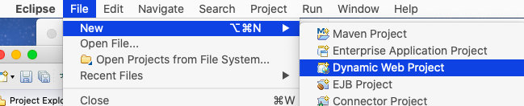
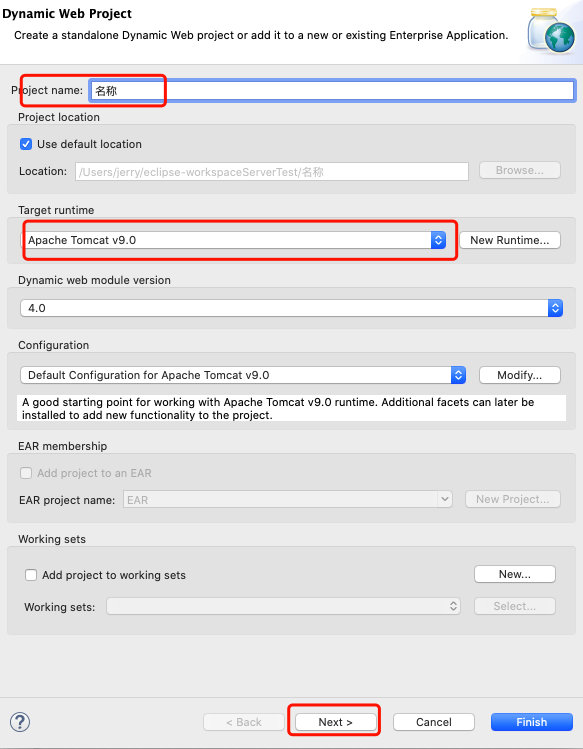
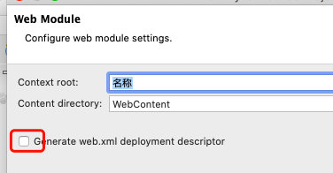
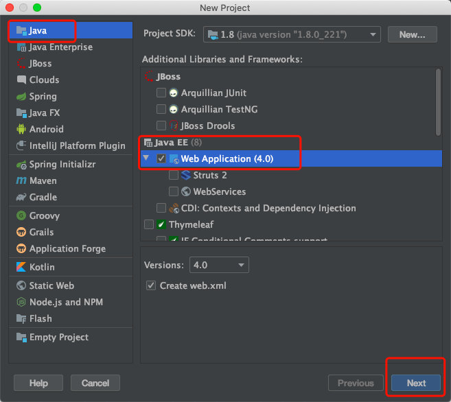
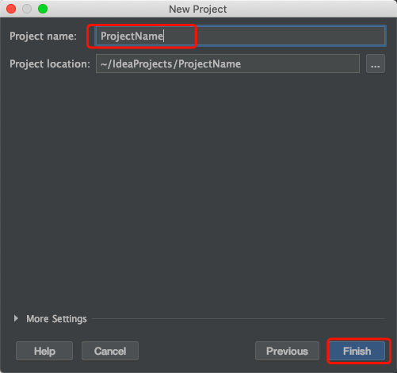
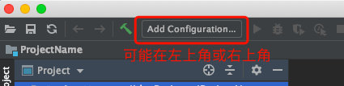
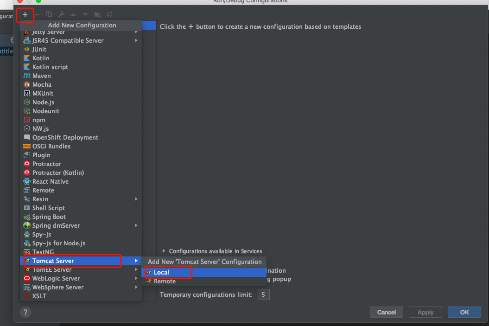
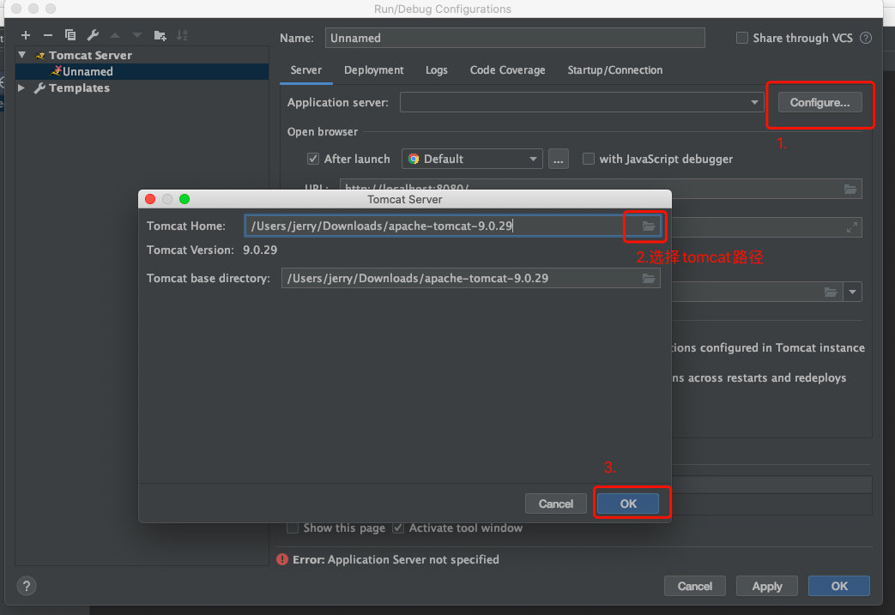
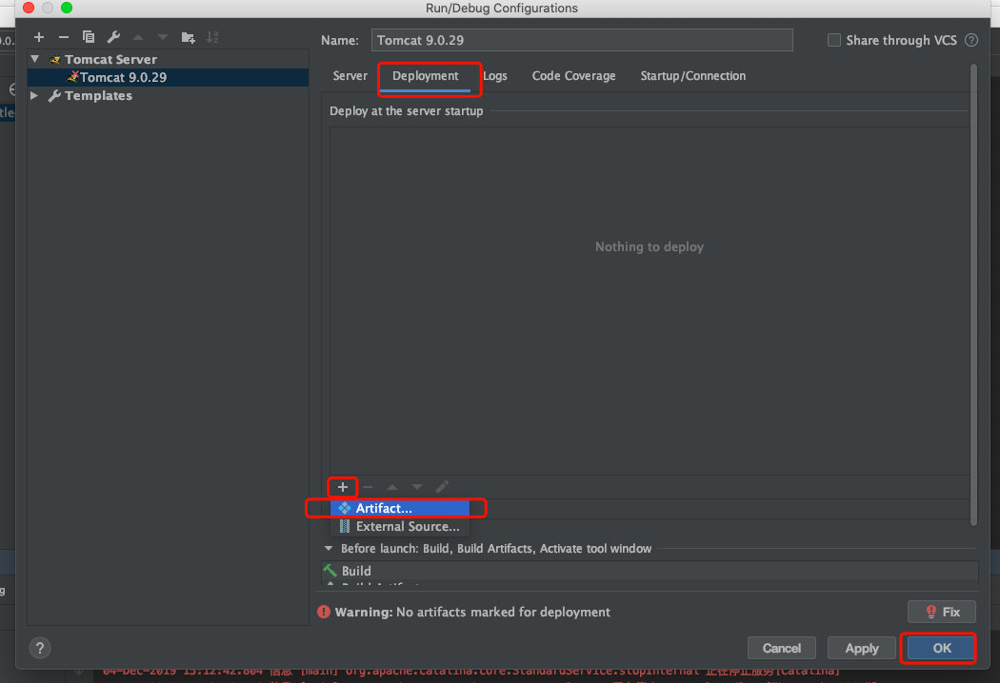
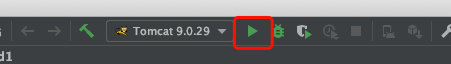

创建web项目
1.点击file->new 选择Dynamic web project(可能隐藏在other中)

2.输入项目名称,target runtime,选择已存在的tomcat服务器,点击next两次

3.勾选创建web.xml文件

4.点击Finish完成创建
启动web项目
1.在WebContent中提供index.html
2.在项目名称上点击右键选择run as -> Run on server
3.浏览器输入localhost:8080/项目名称
创建新项目选择web application

输入项目名称

点击添加配置

在窗口点击加号找到tomcat local

点击configure 选择tomcat安装路径

点击Deployment发布当前项目到tomcat

点击运行自动打开浏览器
